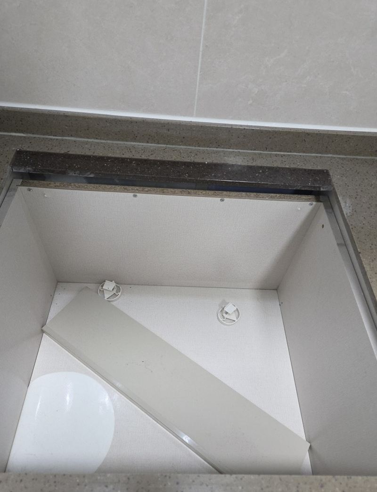
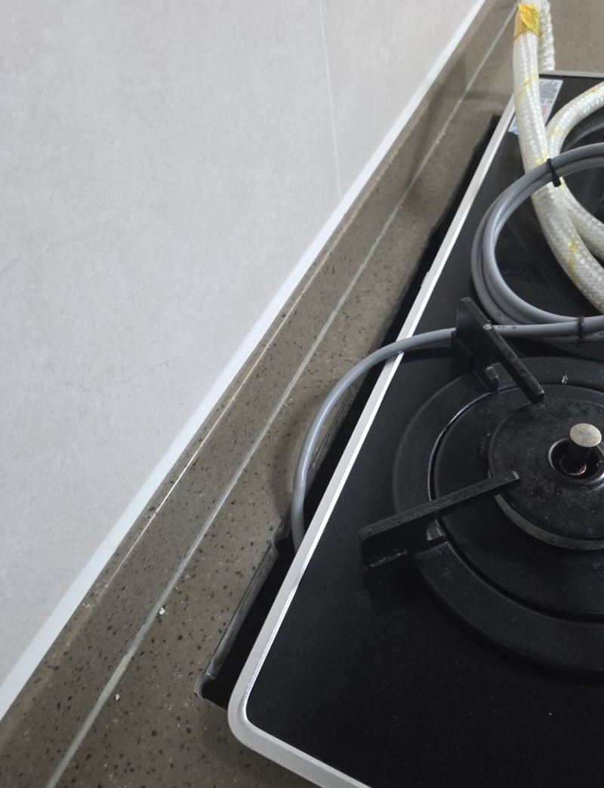
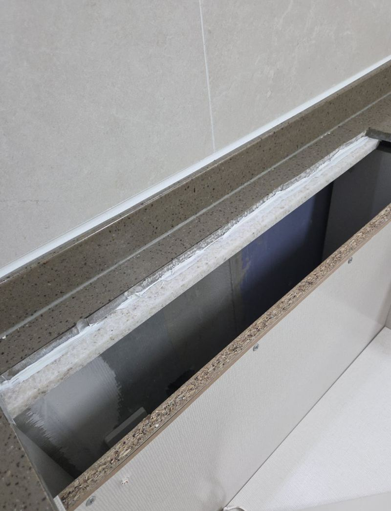
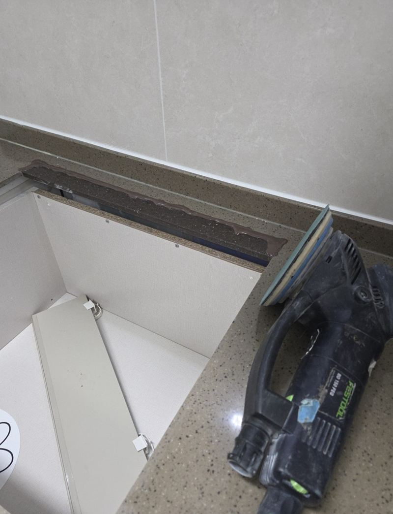
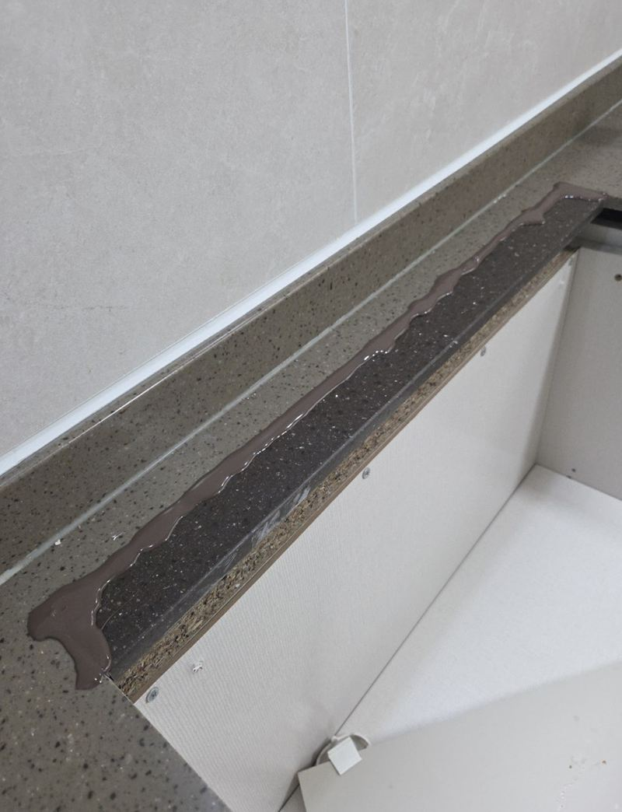
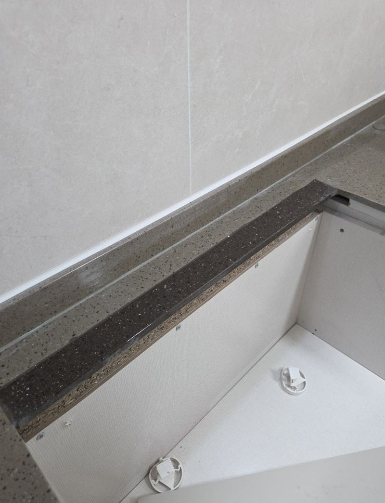

천안 인덕션·가스레인지 대리석 구멍 막음 비용
← 밀어서 전후 비교 →
"이사 가면서 주방 상판을 원래대로 돌려놓고 싶어요." 천안 두정동 아파트였어요. 인덕션을 달면서 원래 구멍보다 넓게 잘라 둔 상태였고, 처음 잘라 낸 대리석 조각은 남아 있지 않았어요. 같은 자재로 메우긴 어려워, 색과 질감이 비슷한 대리석으로 맞추기로 했어요. 인덕션을 떼고 구멍을 잰 뒤 아래에 받침을 만들고, 맞춤 재단한 대리석을 끼워 접착한 다음 샌딩으로 높이를 맞췄어요.
| 현장 | 천안 서북구 두정동 아파트 주방, 이사 전 |
|---|---|
| 상태 | 인덕션 설치 때 넓게 자른 상판 구멍, 원래 조각 없음 |
| 한 일 | 상판·구멍 상태 점검 → 크기 측정 → 하부 받침 보강 → 대리석 맞춤 재단 → 삽입·접착 → 샌딩 → 높이·색 확인 |
| 재료 | 기존 상판과 색·질감이 비슷한 대리석 |
떼고 나면 남는 구멍, 막을 수 있어요
인덕션이나 가스레인지를 빼면 상판에 큰 사각 구멍이 남아요. 다른 제품을 다시 넣을 거면 그대로 두지만, 이사 전 원상복구를 하거나 그 자리를 조리대로 쓰고 싶다면 메워야 해요. 이 집도 이사를 앞두고 원래에 가깝게 돌리고 싶어 하셨어요.
가장 자연스러운 건 처음 잘라 낸 조각을 다시 쓰는 거예요. 하지만 대부분 버리고 없어서, 색과 결이 비슷한 대리석을 골라 맞춰요. 그래서 인덕션을 달 때 나온 조각은 버리지 말고 보관해 두시면 나중에 큰 도움이 돼요.


상판 구멍 막는 순서
점검과 측정
예상보다 넓게 잘려 있었고 모서리도 정리가 필요했어요. 구멍 크기를 재서 필요한 대리석 크기를 정했어요.
하부 보강
구멍이 크면 아래 받침 없이 대리석을 올렸을 때 꺼지거나 금이 가요. 아래에 받침 구조를 먼저 만들었어요.


재단과 접착
준비한 대리석을 구멍에 맞게 잘라 끼우고 접착제로 고정했어요. 가장 신경 쓴 단계예요.

샌딩과 확인
접착제가 단단히 굳은 뒤 표면을 갈아 주변과 높이를 맞추고, 색 차이가 심하지 않은지 봤어요.

비용과 결과가 갈리는 부분
- 구멍 크기클수록 대리석이 크고 하부 보강이 더 필요해요.
- 원래 조각 유무있으면 색이 가장 잘 맞고, 없으면 비슷한 자재를 구해요.
- 상판 무늬알갱이가 크고 무늬가 강한 상판일수록 이음선이 보이기 쉬워요.
- 모서리 정리잘린 테두리가 거칠면 다듬는 손이 더 가요.
완전히 같은 색을 찾기 어려운 경우도 있어서, 작업 전에 색 차이가 날 수 있다는 점을 미리 말씀드려요. 마친 뒤 결과를 함께 보며 높이와 이음선 상태를 확인하고 마무리했어요.
원상복구를 앞두고 있다면
이사 전 원상복구는 생각보다 일정이 빠듯해요. 대리석을 구하고 재단하는 시간, 접착제가 굳는 시간이 필요해서 이삿날 바로 전보다는 며칠 여유를 두고 연락 주시는 게 좋아요.
임대인과 어느 정도까지 복구할지 먼저 이야기해 두면 좋아요. 다음 세입자가 인덕션을 다시 쓸 계획이라면 굳이 막지 않아도 되는 경우도 있어요. 막아야 한다면 구멍 크기와 상판 사진을 보내 주시면 맞는 자재를 미리 찾아볼 수 있어요.
상판 구멍 막음 질문
나중에 다시 인덕션을 넣을 수 있나요?
메운 자리를 다시 잘라야 해요. 다시 쓸 계획이면 막지 않고 덮개를 쓰는 방법도 있어요.
가스레인지 구멍도 같은 방법인가요?
네, 크기만 다를 뿐 하부 보강과 맞춤 재단은 같아요.
메운 자리에 뜨거운 냄비를 올려도 되나요?
다 굳은 뒤엔 괜찮지만 아주 뜨거운 냄비는 받침을 쓰는 게 좋아요.
인조대리석도 되나요?
인조대리석도 비슷한 색 자재로 메워요.
세입자인데 원상복구용으로 충분할까요?
임대인과 어느 정도로 복구할지 먼저 이야기해 두시면 좋아요.
지방도 가나요?
천안·아산·세종 등 충청권도 일정을 맞춰 가요.
다른 인덕션·하이라이트 현장
구멍 크기와 상판 전체 사진을 보내 주세요.
전화 상담 010-4517-9872